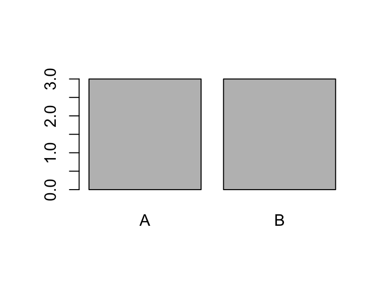

Most notes taken from Hadley’s book. Thank you so much.
Motivation
S3 is the most commonly used object-oriented programming (OOP) system in R.
Most of the common data types you are used to are S3.
# Data frames are S3sloop::otype(mtcars)
[1] "S3"
# tibbles are S3mt_tb <- tibble::as_tibble(mtcars)sloop::otype(mt_tb)
[1] "S3"
# lm objects are S3lmout <-lm(mpg ~ wt, data = mtcars)sloop::otype(lmout)
[1] "S3"
# ggplot2 plots are S3pl <- ggplot2::ggplot(mtcars, ggplot2::aes(x = wt, y = mpg)) + ggplot2::geom_point()sloop::otype(pl)
[1] "S3"
# tidymodels use S3tdout <- parsnip::linear_reg() |> parsnip::set_engine("lm") |> parsnip::fit(mpg ~ wt, data = mtcars)sloop::otype(tdout)
[1] "S3"
# Factors are S3x <-factor(c(1, 2, 3))sloop::otype(x)
[1] "S3"
# Dates are S3x <- lubridate::make_date(year =1970, month =1, day =1)sloop::otype(x)
[1] "S3"
If you are creating a package and you want OOP features, you should use S3 unless
You work in a large team, or you need to contribute to Bioconductor (use S4).
Modify-by-reference is important (use R6).
This is since most R programmers are used to S3 (intuitively) and are not used to S4 or R6.
S3 Basics
An S3 object is any variable with a class attribute. This is the full definition.
S3 objects may or may not have more attributes.
E.g. the factor class always has the levels attribute.
x <-factor(c("A", "B", "B", "A", "C", "A"))attributes(x)
$levels
[1] "A" "B" "C"
$class
[1] "factor"
You can get the underlying base type by unclass().
unclass(x)
[1] 1 2 2 1 3 1
attr(,"levels")
[1] "A" "B" "C"
Functions can be S3 objects as well as long as they have the class attribute.
sout <-stepfun(1:3, 0:3)sloop::otype(sout)
[1] "S3"
class(sout)
[1] "stepfun" "function"
S3 objects behave differently when passed to a generic function, a special type of function meant to provide different implementations based on the S3 class of the object.
Use sloop::ftype() to see if a function is generic. If it has the word “generic” is anywhere, it can be used as an S3 generic.
These are all S3 generics
sloop::ftype(print)
[1] "S3" "generic"
sloop::ftype(summary)
[1] "S3" "generic"
sloop::ftype(plot)
[1] "S3" "generic"
But these are not:
sloop::ftype(lm)
[1] "function"
sloop::ftype(stop)
[1] "internal"
Generic functions behave differently depending on the class of the object.
This is not implemented by if-else statements. That would be inefficient because only the authors of print() (i.e. the R Core team) could add new functionality to new S3 objects. The idea of using generic functions allows us (new developers) to define new functionality to the same generics.
The implementation of a generic for a specific class is called a method.
The act of choosing a method from a generic is called method dispatch. Use sloop::s3_dispatch() to see this process.
So above, it found a method for tbl_df and used it. So it did not go on to look for other methods (tbl, data.frame, or the default method), even though those classes have methods.
Below there is no aperm() method for matrices, integers, or numerics, so it used the default one, which is for arrays.
mat <-matrix(1:12, nrow =4, ncol =3)sloop::s3_dispatch(aperm(mat, c(2, 1)))
But these are often not exported and should generally not be accessed directly by the user, or other developers.
Lots of methods have . in the middle. But not all functions with . are methods. E.g. read.csv() and t.test() are not methods of generic functions. read.csv() is just a function with a dot in the name, and t.test() is just a generic function with a dot in the name. These functions were created before S3, which is why they are named poorly.
You can confirm that a function with a . in it is a method also with sloop::is_s3_method().
sloop::is_s3_method("read.csv")
[1] FALSE
sloop::is_s3_method("t.test")
[1] FALSE
sloop::is_s3_method("print.default")
[1] TRUE
Because of the important role of ., you should never name variables or non method functions with a dot in them.
To find all of the methods of a generic, use sloop::s3_methods_generic().
To find all methods for a class, use sloop::s3_methods_class().
sloop::s3_methods_class("data.frame")
# A tibble: 57 × 4
generic class visible source
<chr> <chr> <lgl> <chr>
1 [ data.frame TRUE base
2 [[ data.frame TRUE base
3 [[<- data.frame TRUE base
4 [<- data.frame TRUE base
5 $<- data.frame TRUE base
6 aggregate data.frame TRUE stats
7 anyDuplicated data.frame TRUE base
8 anyNA data.frame TRUE base
9 as.data.frame data.frame TRUE base
10 as.list data.frame TRUE base
# ℹ 47 more rows
Exercise: Explain the difference between each of the dots in as.data.frame.data.frame(). How would you typically use this method? Include in your discussion calls from the functions in the {sloop} package.
Exercise: mean() is an S3 generic. What classes have a method for mean(). What is the difference between them?
Exercise (Advanced R): What class of object does the following code return? What base type is it built on? What attributes does it use?
R has no checks that the structure of the class is as you intended. E.g., we can change the “data.frame” class to "Date" and bad things will happen (i.e. R will try to use the wrong generics on the data).
class(mt_tb) <-"Date"mt_tb
Error in as.POSIXlt(.Internal(Date2POSIXlt(x, tz)), tz = tz): 'list' object cannot be coerced to type 'double'
Generics
A generic function is just one that performs method dispatch. Method dispatch is implemented through UseMethod(), so it is really easy to create a new generic.
No arguments are passed to UseMethod() except the name of the generic.
The x is a required argument that all methods must have. You can choose to have this be a different name, to have more required arguments, or to have no required arguments.
The ... allows methods of your generic to include other variables than just x.
This is literally what most generic function definitions look like.
mean
function (x, ...)
UseMethod("mean")
<bytecode: 0x13bbe16c0>
<environment: namespace:base>
print
function (x, ...)
UseMethod("print")
<bytecode: 0x13adc7150>
<environment: namespace:base>
plot
function (x, y, ...)
UseMethod("plot")
<bytecode: 0x11a8bfe48>
<environment: namespace:base>
summary
function (object, ...)
UseMethod("summary")
<bytecode: 0x13ad59b60>
<environment: namespace:base>
The key of a generic is its goals. Methods should generally align with the goals of the generic so that R users don’t get unexpected results. E.g. when you type plot() you shouldn’t output a mean (even though S3 makes this valid behavior).
How UseMethod() works: If an object has a class vector of c("cl1", "cl2") then UseMethod() will first search for a method for cl1, if it does not exist it will use the method for cl2, and if that does not exist it will use the default method (there is usually one).
E.g. all tibbles have class
mt_tb <- tibble::as_tibble(mtcars)class(mt_tb)
[1] "tbl_df" "tbl" "data.frame"
So any generic called with a tibble will first search for a tbl_df method, then a tbl method, then a data.frame method, then a default method (which would be for a list if applicable since tibbles are built on lists).
x <-factor(c("A", "A", "B", "B", "A", "B"))class(x) <-"factor2"print(x)
[1] "A" "A" "B" "B" "A" "B"
Note: If you don’t know, whenever you just run something and have it print to the console, that is R implicitly running print(). So this looks better too:
x
[1] "A" "A" "B" "B" "A" "B"
Note: In a print method, you either call the print() method of another S3 object, or you call cat(), which does less under the hood than print().
We can verify that method dispatch is working appropriately
sloop::s3_dispatch(print(x))
=> print.factor2
* print.default
Plotting looks better too
plot(x)

You should only build methods for classes you own, or generics you own. It is considered bad manners to define a method for a class you do not own unless you own the generics.
E.g. if you define a new print method for tbl_df, then include that in your package, that would be impolite to the tidyverse folks.
A method should have the same arguments as the generic. You can have more arguments if the generic has ... in it. E.g. if you create plot(), then you must include x and y, but may include anything else.
formals(plot)
$x
$y
$...
Exercise (Advanced R): What generics does the table class have methods for?
Exercise: Create a new generic called pop that will remove the last element and return the shortened object. Make a default method for any vector. Then make methods for the matrix class that will remove the last column or row, depending on the user choice of an argument called by.
The Design of an S3 Object
There are three most common structures for an S3 object.
In decreasing order of most common usage by you:
A list-like object, where the list represents one thing (e.g. model output, function, dataset, etc…).
For example, the output of lm() is a list like object that represents one model fit.
lmout <-lm(mpg ~ wt, data = mtcars)sloop::otype(lmout)
[1] "S3"
typeof(lmout)
[1] "list"
I use this format all of the time for the outputs of my model fits.
A vector with new functionality. E.g. factors and Dates. You combine, print, mathematically operate with these vectors in different ways.
x <-factor(c("A", "A", "B", "A", "B"))sloop::otype(x)
[1] "S3"
typeof(x)
[1] "integer"
Lists of equal length length vectors. E.g. data.frames and POSIXlt objects.
POSIXlt objects are lists of years, days, minutes, seconds, etc… with the ith element of each vector contributing to indicating the same moment in time.
x <-as.POSIXlt(ISOdatetime(2020, 1, 1, 0, 0, 1:3))x
data.frame objects are lists of vectors where each vector is a variable and the ith element of each vector represents the same observational unit.
typeof(mtcars)
[1] "list"
Inheritance
Inheritance is shared behavior. You can make your new class inherit from another class so that if you did not create a method, then it will fall back on the parent method.
We call the child class the subclass and the parent class the superclass.
E.g. the tbl_df (sub)class inherits from the data.frame (super)class.
You can simply create a subclass by including a vector of in the class attribute.
mt_tb <- tibble::as_tibble(mtcars)class(mt_tb)
[1] "tbl_df" "tbl" "data.frame"
You should make sure your subclass is of the same base type as the superclass you are inheriting from. E.g. make sure anything you build off of data.frames also has a list base type.
You should make sure that you have at least all of the same attributes as the superclass you are inheriting from. E.g. data.frames can have names and row.names, and so any subclass should also have those attributes.
Documenting S3
It is sometimes nice to have the same help file for the default method and the generic. You can do that via the @describeIn{roxygen} tag.
#' Generic Function for generic.#' #' @param x An R object. generic <-function(x, ...) {}#' @describeIn generic Default Method#' #' @param y is some default option#' generic.default <-function(x, y =NULL, ...) {}
See an example usage of this for the mean() and summary() documentation.
Exercise: Document your pop() generic and the methods you made for pop().
Method Dispatch Technicalities
Every variable in R has some implicit class even if it does not have a class attribute.
This implicit class is used to define methods for these objects, and to control method dispatch when you use a base type on a generic.
sloop::s3_class() will return the implicit or explicit class of all objects.
x <-c(1, 2, 3)sloop::otype(x) ## not an S3 object
[1] "base"
sloop::s3_class(x) ## implicit S3 class
[1] "double" "numeric"
x <-matrix(1:6, nrow =3, ncol =2)sloop::otype(x) ## not an S3 object
[1] "base"
sloop::s3_class(x)
[1] "matrix" "integer" "numeric"
So to create new matrix methods, you can do
generic.matrix <-function(...) {}
even though matrix is not an S3 class.
The following functions are called “group generics” +, -, *, /, ^, %%, %/%, &, |, !, ==, !=, <, <=, >=, and >.
You can define methods for these group generics, but undergo what’s called double dispatch, choosing a method based on both arguments. This is what allows you to add integers and dates together. We will talk about how to do this correctly in the next lecture.
New functions
class(): Assign or get the class attribute.
unclass(): Remove class attribute and obtain underlying base type.
inherits(): Test if an object is an instance of a given class.
sloop::ftype(): See if a function is a “regular/primitive/internal function, a internal/S3/S4 generic, or a S3/S4/RC method”.
sloop::s3_dispatch(): View method dispatch.
sloop::s3_methods_generic(): View all methods of a generic function.
sloop::s3_methods_class(): View all methods implemented for a specific class.
sloop::s3_class(): Returns implicit and explicit class.
sloop::is_s3_method(): Predicate function for determining if a function is an S3 method.
UseMethod(): Used in a generic to define it as a generic.
NextMethod(): Apply the next method, in the method dispatch chain, of the called generic.